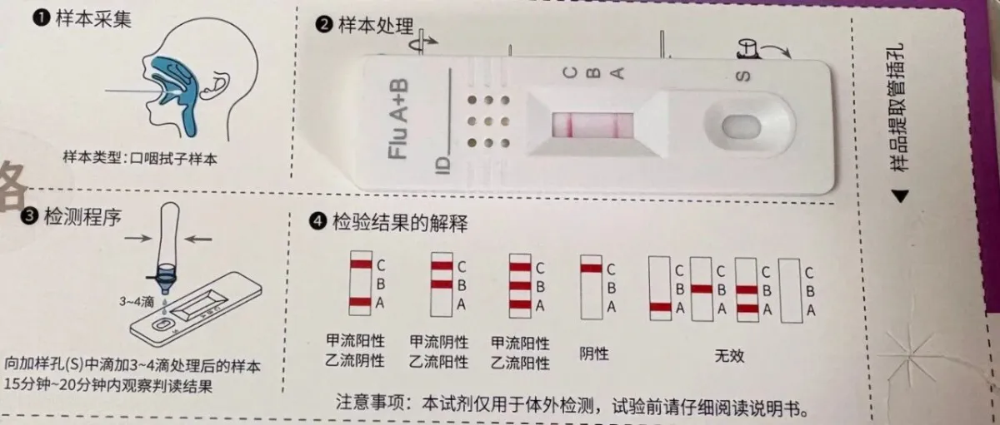

文|圆圈妈妈
双胞胎的心灵感应有很多传说，但我们家最常见的版本永远是——
要么一起病，要么前后脚接力病。
这一次甲流也不例外。
圈圈刚烧完一场，圆圆立刻接力，好像提前取到号，排好队一样。
我们这个四口小家，48小时之内直接沦陷。
11 月的最后一天，我在老家。
圈圈打来电话，说发烧了，38°7。
我马上订了最早的高铁。
等车的时候，他隔十分钟给我来一通电话。
“妈妈，你怎么还没到家？”
“妈妈，我好难受啊，鼻子堵，喉咙痛，头晕，全身没力气……”
“妈妈，我好想要你在身边。”
听得出，他哭过。
孩子生病，那种需要妈妈的感觉，
是最直接的、最赤裸的依赖。
下午到家，他看见我，整个人像立刻被充电一样精神了。
果然，妈妈是儿子心中的苦口良药——
虽然苦一点，但关键时刻真管用。
见他体温一直在 38°5，精神状态还行，就没给他吃退烧药。
想着这波八成是前几天圆圈爸感冒互相传染的“连锁反应”。
测了抗原，果然——阳性。
立刻给他上奥司他韦颗粒。
晚上烧到 39°2，他的小嘴还在哔哔，反倒是我累得一句话都不想说。
想到第二天有颁奖，他去不了，我替他觉得遗憾。
那是他们父子仨一起努力赢来的荣誉啊。
只能希望奇迹出现。
12 月 1 日，周一。
奇迹没出现，体温还是 38°7。
我给老师发了请假消息：
颁奖去不了了。
主持人竞选八成也没戏了。
双重打击下，
他委屈地直哭。
整个上午一口粥水都没喝。
然而，中途又有了转机——
老师说竞选有人弃权，他直接补上。
他整个人一下子亮了。
之前吃不下的，这会儿心情好，一大碗粥干干净净下肚。
人就是这样，心一松，气就顺。
明明还烧着，他却精神上来了，抱着主持稿念个不停。
那时我就知道——
他快好了。
12 月 2 日，周二早晨。
36°8，退烧。
他迫不及待想穿上校服去学校。
我怕反复烧，就让他留在家里观察。
烧是退了，可鼻子堵得厉害，
躺下就憋得慌，
睡不好，让他整个人都烦躁。
12 月 3 日，周三早上，
迷迷糊糊听到一阵阵咳嗽声，我以为是圈圈。
可他就在我旁边，难得睡得沉。
连日折腾，他总算缓过来一点。
原本计划今天返校，看他这样，我就没叫醒他。
又请了一天假，
让他在家补补网课，把作业补上。
那咳嗽声——
只能是圆圆的。
我心里微微一紧：
不会也被传染上了吧？
希望是我想多了。
下午圆圆回到家，话很少。
我还以为心情不好，没多想。
晚上写作业也是心不在焉，整个人都是飘着的。
我心里咯噔了一下。
摸了摸额头，温度还算正常。
可那股没精神的劲儿，让我隐隐知道——
大概是中招了。
我还是祈祷能有个奇迹。
但心里明白：
双胞胎生病互相传染是解不开的魔咒。
有些事，躲不过，
该来的，还是来了。
12 月 4 日，周四，一大早，他哭着醒来。
那一声我就听出来了——是难受了。
体温 38°2，不算高，但整个人确是高烧的状态，搁哪哪都说不出的难受。
就给他吃了退烧药。
为了不耽误科普剧录制，他硬撑着说要去学校。
我担心他出状况，就陪他一起去。
巧得很，圈圈那天也返校排练艺术节的主持。
兄弟俩同一时间出现在同一个报告厅：
一个刚病好， 一个正在病，
一个录科普剧，一个练主持。
站在不同的位置，
却都在为各自的小舞台努力。
退烧药起效后，圆圆又有精神跟同学打成一片。
我则盯着台上的圈圈，比他还紧张。
这是他第一次大舞台主持。
看得出他很在乎。
前几天在家排练得挺好的，但一上台就忘词。
再加上甲流发烧刚好，元气尚未恢复，又遇到严格的老师。
一遍遍的纠错，他有些崩溃。
我看到他抬手捂住脸，背过身抹眼泪。
那一瞬间，我心都揪起来。
我很想上前抱抱他，说一句：
“没关系，妈妈一直在。”
但我不能。
成长，有时候，只能远远陪着。
休息时，我递了杯水给他。
他红着眼看我一眼，说：“谢谢妈妈。”
我拍了拍他的肩，没说话，就点点头。
他也点点头，背过脸去...
排练结束，他朝我挥挥手就回教室了。
背影瘦瘦的，书包沉沉的。
这大概就是成长的痛。
但他在变强，这是真的。
我应该感到高兴才对。
另一边，圆圆开始录制。
团队准备不足，NG 了很多次。
此时药效也在慢慢退去。
剧本要求穿短袖，他冷得直哆嗦，
候场时，站都站不稳，只能瘫坐在椅子上休息，
可只要音乐响，他还是马上站起来，投入角色。
他饰演剧里的小明，感染了基孔肯雅热，发烧、头晕——
而此时的他，几乎是本色出演。
11 点多终于录制完成。
他靠在我身上，脚像是踩不到地。
我赶紧把他带回家，给他喝了水，吃了奥司他韦。
他躺下就睡，一直睡到下午四点。
我心里想：能睡就好，睡一觉也许就缓过来了。
但我低估了这一波病毒的厉害。
他一醒来就剧烈咳嗽，说喉咙像卡着一根柱子，上不去，下不来，只能不停地咳。
我掀开被子，一股热浪扑面而来。
摸了摸他的额头，全身都是烫的。
体温计亮出 40° 的那一刻，我的手开始抖。
我深吸一口气，稳住，量好药，喂下去。
药是起了点作用，却始终不出汗，只把体温压到 38°3。
他像被抽掉力气一样，软软地躺着。
晚上十点，又烧到 39°。
以前我也许会先物理降温，让他撑一撑；
但这一次，我一点都不敢耽搁，马上再给药。
他昏昏沉沉地躺下，却咳得厉害，困也睡不着。
不停说憋得慌，喘不过气来。
我听得心里一紧，立刻带他去急诊。
儿童医院里人很多。
护士说前面还有七十多号，要等三个小时。
我转身就去了妇幼。
查血象还算正常，听诊也没发现大问题。
医生只叮嘱继续吃奥司他韦，吃满五天。
回到家，已经凌晨一点多。
他一挨枕头就睡着了。
12 月 5 日，周五早上 6 点 50 分，他又烧到 40°。
继续吃退烧药，却一会儿睡、一会儿醒。
咳得厉害，鼻涕、喉咙痛、鼻塞，全都来了。
鼻子堵得睡觉只能张口呼吸，
张口呼吸又让喉咙更痛，
喉咙痛让他咳得更凶，
咳得更凶，又让他烧得头晕想吐。
我抱着他，慢慢哄着。
他迷迷糊糊地开始说胡话——
说看见了上帝，
又说自己的手“有四千年那么长”。
....
我摸着他滚烫的额头，看着他难受得睁不开眼，
整个人软在我怀里，像随时会昏过去。
我的心正在一点点地塌下去。
这情景怎么似曾相识...
他小时候那次肺炎抢救，好像也是这种状态。
那时他才刚出生38 天，被我抱在怀里，怎么喊都没有反应。
那种无力感，我至今忘不了。
我们马上打车去了医院。
药效还在，他 38°5。
我们还在犹豫要不要住院，他的四肢突然冰冷，开始打寒颤。
医生立刻开了住院单，还叫来保安带路。
保安在前面开道，圆圈爸背着他一路小跑。
我跟在后面，看着他们的背影，只觉得腿软。
那些不好的记忆一下子都冲出来了，胸口堵得发紧，像随时会倒下。
办住院时，他一直喊冷，我赶紧脱下身上的马甲披在他身上。
我握着笔的手直抖，身份证号码、家庭住址，一下子怎么都想不起来。
护士看我们情况紧急，让父子俩先上楼，我留下来办手续。
在我最无助最脆弱的时候，有人伸出援手，
我被她的善意击中了——
眼泪一下子就涌了上来，
视线都模糊了...
终于办好住院，我冲上十二楼儿科病区。
护士说孩子已经在病房。
医生正在问情况，简单查体后，
说神经系统没问题，
那些胡话只是高烧带来的谵妄。
我听到这句，心里的那根弦才稍微松下来。
圆圆躺在病床上，眼睛半闭着。
人还虚弱，但已经比早晨那会儿，状态好多了。
护士在给他输液，玛巴洛沙韦也用上了。
他终于安静了，
我也冷静下来。
我从没像现在这样，
希望自己能一直待在医院。
这里曾是我最怕踏入的地方，
现在却让我很有安全感。
中午，圈圈快放学了。
见圆圆情况稳定，我又赶回去给圈圈准备饭菜。
骑车回家的路上，太阳晒得刺眼，
可心里却凉得发空，整个人都累透了。
当双胞胎的妈妈，大概就是这样——
永远像陀螺一样不停转。
别人说什么“一个养，两个放”，
可真到自己身上，哪有那么容易。
不生病还好，一生病，两个人一起倒，
全家遭殃...
那种叫天天不应、叫地地不灵的囧，
真的没人懂。
12 月 6 日，周六早晨，圆圆发来消息：
“妈妈，我退烧了，37°1。”
我盯着那串数字，看了好几遍。
心里的那块石头，终于落了地。
我知道，我们挺过去了。
上午我带圈圈去了图书馆。
他看书，我去盒马买菜给圆圆煮好吃的补身体。
久违的悠闲，就像给这几天按下了暂停键。
无灾无痛真好，
身体健康真好。
下午，退烧的圆圆能下楼透透气。
我带着圈圈去和他会合。
分开两天的兄弟俩，一见面又打成一片，笑成一团。
看着他们追来跑去，我突然觉得——
我们刚穿过一场暴风眼，
现在站在了彩虹下面。
过去一周，兄弟俩轮流发烧。
我和圆圈爸寝食难安..
守完圈圈，再守圆圆。
彻夜不睡其实不算什么，
真正消耗人的，是那种揪着心的担忧和惊恐。
把这段经历写下来，
献给所有正在与甲流对抗、
守在孩子床边、不眠不休的妈妈们。
辛苦了。
-END-
